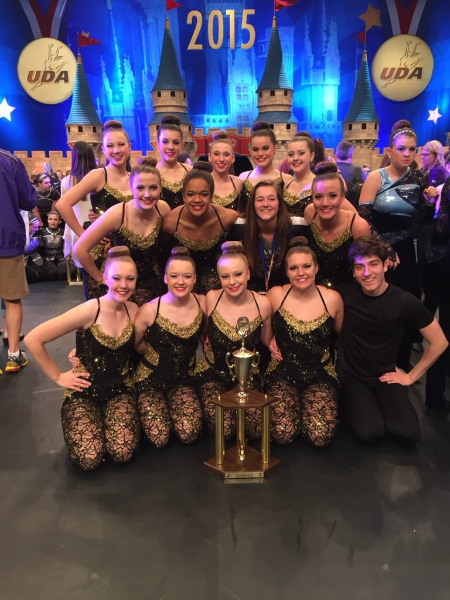

The Cave - Mumford and Sons
02.03.17

Today, my husband shared a memory on FB. This memory featured a video of the Urbandale High School Varsity Dance team performing at Nationals in 2015. Though I have watched this dance countless times, it never gets old.
2015 was my final year of coaching the dance team; it was an emotional one. We started our competition season winning State in the category “Class IV High Kick". Additionally, we won the prestigious Judge's Choice Award. For a little back story, the Judge's Choice Award is given out to the team with a routine that stood out among an entire day of dances, across all styles and divisions. This was a first for the UHSDT.
State is long day and ends with dance teams from across the state bunched up on the floor of Wells Fargo Arena patiently (or not so patiently) waiting through a long awards ceremony. This wasn’t my first rodeo; I knew the drill. I did not tell my team, but I felt incredibly optimistic waiting for our category to be announced. However, I was not prepared for the Judge's Choice Award. It was amazing to capture the excitement on my team’s face as the award was announced. No matter what entailed in the competitions ahead, I remained elated that my team had won the State Championship. All was well…then we headed to UDA nationals.
Between State and Nationals, I was down two dancers. It takes a significant amount of work to restage a kick dance. Subtration in a kick dance is never a good thing. Especially keeping in mind that our initial dance team (before the lost dancers) would still weigh in 3-5 dancers smaller than most of the large school districts that competed at Nationals. We got there, we practiced, we left it all on the floor and we waited… The announcement of finalists at Nationals is about a two minute process, but it feels like an eternity when you are waiting for your team to be lucky enough to advance. I had been to Nationals as a coach a few times before. We had experienced both advancing and not moving on. It had been a decent amount of time since “Urbandale” was loudly called out as a finalist by the announcers. We got our groove back in 2015! We were announced as finalists; it was a blur after that. My experience from that point on was that of a quiet, proud observer of a little team that could. I should add that my assistant coach, Jayme, was a young woman who was on my very first dance team that I inherited some ten years earlier. That made it extra special! The cherry on top of the excitement was that my youngest daughter, Alenah, and all of her best friends were on this final team of mine.
I had Mumford and Sons in my back pocket for two years, waiting for the right time to pull the trigger on it. This was the right year. My original pick was "Little Lion Man", but “The Cave” was easier to seamlessly edit into a two minute song. We ended up 8th in the nation in Varsity High Kick. It was a fantastic competition year. Trophies and accolades are always awesome, but seeing a team work hard and their sweat pay off is greater than all objects.
“And I'll find strength in pain
And I will change my ways
I'll know my name as it's called again…”
The Cave will forever bring me fond memories J
~Peace